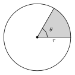

7.1Circumference and Arc Length
- A circle is all the points the same distance from the center. A radius goes from the center to the circle. A diameter is a chord through the center, so d = 2r.
- A central angle has its vertex at the center. A minor arc is less than 180°. A semicircle is 180°. A major arc is more than 180° and has three letters in its name.
- Circumference: C = πd = 2 πr. For every circle, C ÷ d = π ≈ 3.14159.
- Arc measure is in degrees and equals the central angle. Arc length is a distance: central angle360° · 2 πr.
- The arcs around a circle add to 360°.
Example: r = 9 ft and the central angle is 70°. The arc length is 70360 · 18 π = 3.5 π ≈ 10.99 ft.
7.2Area of Circles and Sectors
- Area of a circle: A = πr2. Use the radius, not the diameter. Area is in square units.
- A sector is a slice between two radii. Sector area = central angle360° · πr2.
- A ring (annulus) has area πR2 − πr2. Square each radius first, then subtract.
- For a shaded region, add or subtract the areas of simple shapes.

Example: r = 6 in and the central angle is 60°. The sector area is 60360 · 36 π = 6 π ≈ 18.85 square inches.
7.3Radians
- One radian is the central angle whose arc is as long as the radius. θ = sr.
- A full turn is 2 π radians. 180° = π radians.
- Degrees to radians: multiply by π180. Radians to degrees: multiply by 180π.
- With θ in radians: arc length s = rθ and sector area A = 12r2θ.
| Degrees | 30° | 45° | 60° | 90° | 180° | 360° |
|---|---|---|---|---|---|---|
| Radians | π6 | π4 | π3 | π2 | π | 2 π |
Example: r = 8 and θ = 3 π4. Then s = 8 · 3 π4 = 6 π and A = 12(64)3 π4 = 24 π.
7.4Inscribed Angles and Tangents
- An inscribed angle has its vertex on the circle. It is half of its intercepted arc. Two inscribed angles on the same arc are equal.
- An angle inscribed in a semicircle is a right angle.
- Opposite angles of an inscribed quadrilateral are supplementary.
- A tangent line touches the circle at one point and is perpendicular to the radius there. Two tangent segments from one outside point are equal.

Example: an inscribed angle that intercepts an 80° arc measures 40°. A tangent segment PT with radius 5 and OP = 13 has PT = 132 − 52 = 12.
7.5The Equation of a Circle
- Standard form: (x − h)2 + (y − k)2 = r2. The center is (h, k). The radius is r.
- A plus sign inside means a negative coordinate: (x + 3)2 has h = −3.
- From a center and a point: find r2 with the distance formula. From the ends of a diameter: the center is the midpoint.
- To change x2 + y2 + bx + cy + d = 0 to standard form, complete the square for x and for y. Add the same numbers to both sides.
- Compare (x − h)2 + (y − k)2 with r2: equal is on the circle, less is inside, more is outside.

Example: x2 + y2 − 6x + 4y − 12 = 0 becomes (x − 3)2 + (y + 2)2 = 25. The center is (3, −2) and the radius is 5.